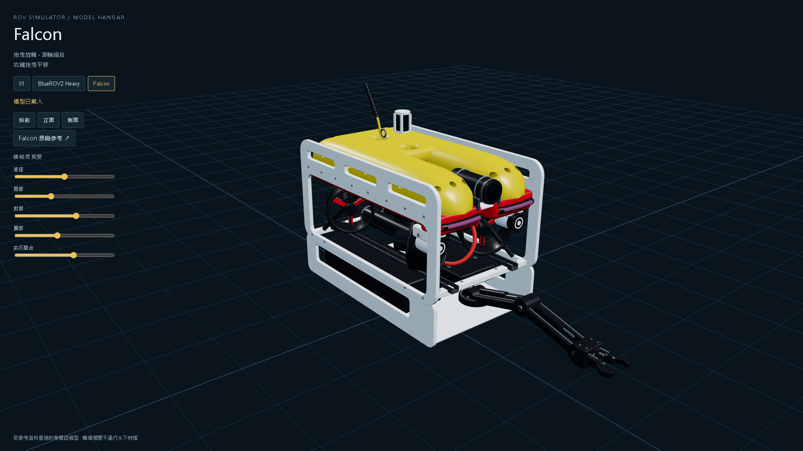
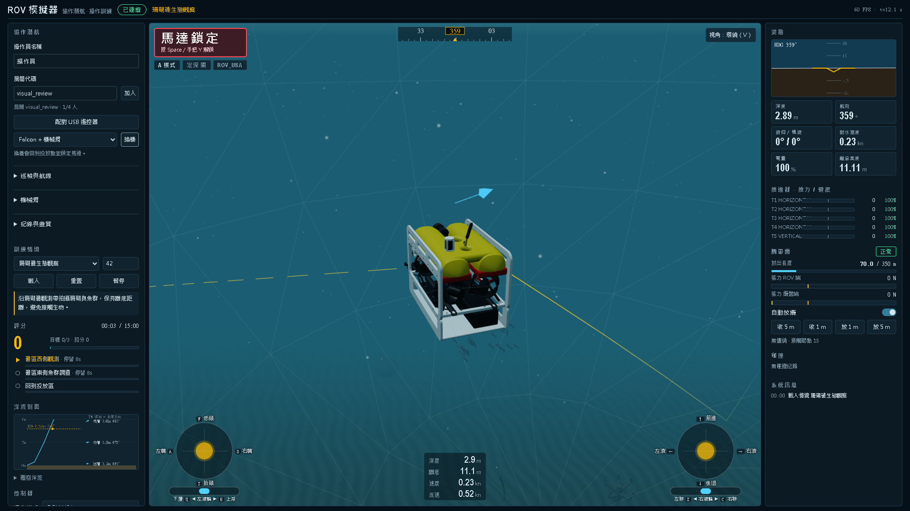

ROV 模擬器 · 操作員訓練
ROV 協作潛航模擬器
接上 USB 手把，與其他操作員各自駕駛 ROV，一起練習巡檢、機械臂回收、洋流中操控與海洋生態觀察。模擬器保留既有 SDK 相容介面，可延續團隊的操作程式。


1–4 人共享房間，各自操控一台 ROV
0–2.5 kn表層、中層、底層分別設定的洋流與陣風
350 m集中質量纜線：張力、卡纜、繞樁圈數、斷纜
珊瑚礁／海草床依固定種子生成海底生態與魚群
回放裡有什麼
- 導管架碰撞：自動導航直線穿越斜撐高度，撞擊後停航倒退脫離。
- 纜線纏繞脫困：開局纜線已繞樁 1.8 圈，反方向繞樁解開。
- 強流中樁前懸停：2.5 kn 橫流下導航到樁前 1.5 m 並保持。
- Korean Castle 沉船調查：32 m 海床上斷成三截的 150 m 貨輪，下潛時開燈，依格網編號檢查斷裂面、貨艙與艉樓。
自己飛
安裝 Python 3.10 以上，Windows 直接雙擊 simulator/START_SIM.bat；其他系統在 simulator 資料夾執行 pip install -r requirements.txt 和 python -m qysim.server。用瀏覽器開 http://127.0.0.1:8080/，插上手把就能飛。詳細步驟見 README。
工作船、甲板人員模型來自 OpenGameArt 與 Quaternius（CC0），海面與天空使用 three.js（MIT）。Korean Castle 為依海報推估的示意模型，非實測。清單見 CREDITS。